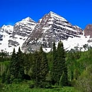
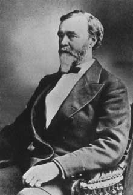
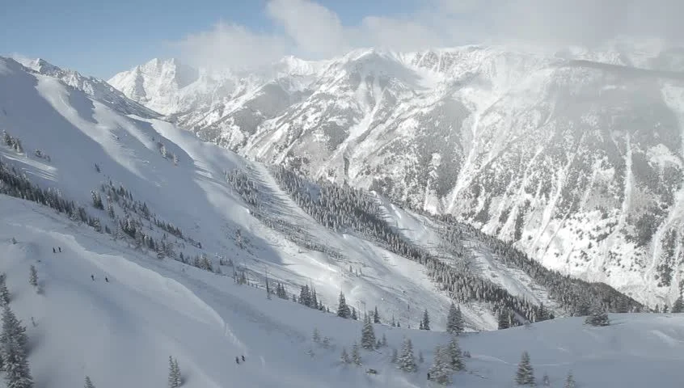
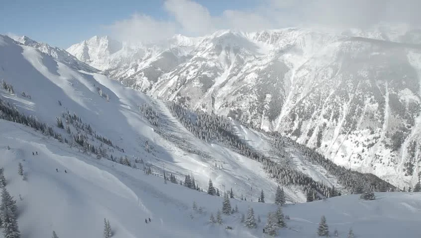

historicol facts about colorado.
learn to cultrer with us.
Colorado is America’s eighth largest state in terms of land mass and is located in the Rocky Mountain region of the western United States. The region was first inhabited by Native American people more than 14,000 years ago. The state was largely shaped during the Colorado Gold Rush, which kicked off in 1859, and the resulting decades of mining history, which continues in some local areas to this day.

The region that is today the U.S. State of Colorado has been inhabited by Native Americans and their Paleoamerican ancestors for at least 13,500 years and possibly more than 37,000 years. The eastern edge of the Rocky Mountains was a major migration route that was important to the spread of early peoples …

The Royal Gorge Bridge, above the Arkansas River, was the world’s highest suspension bridge for more than 70 years.

 
